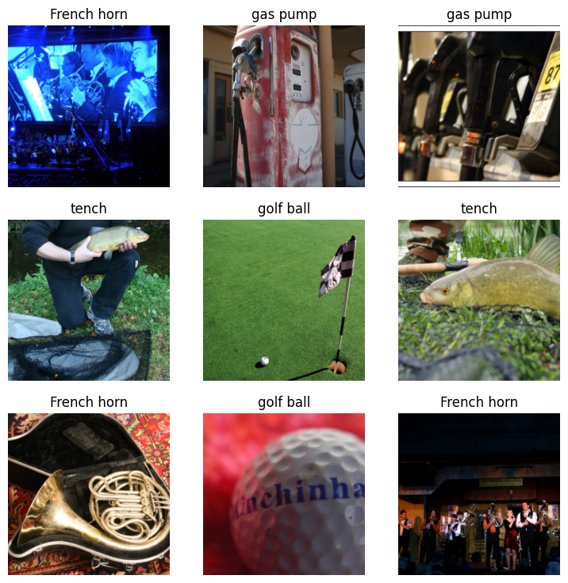
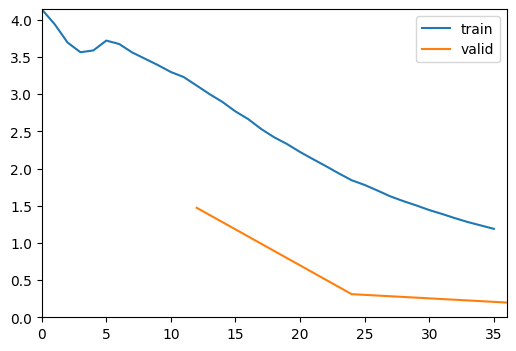
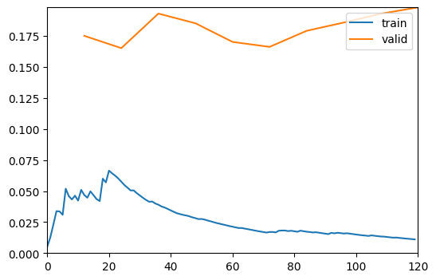

Train
Introduction¶
Now that we have a dataset of labeled samples from the active learning process, we can train a model on this dataset.
import pandas as pd
df = pd.read_parquet("active_labeled.parquet")
df
| filepath | label | |
|---|---|---|
| 0 | data/imagenette/train/n02102040/n02102040_2788... | English springer |
| 1 | data/imagenette/train/n02102040/n02102040_3759... | English springer |
| 2 | data/imagenette/train/n02102040/n02102040_1916... | English springer |
| 3 | data/imagenette/train/n02102040/n02102040_6147... | English springer |
| 4 | data/imagenette/train/n02102040/n02102040_403.... | English springer |
| ... | ... | ... |
| 238 | data/imagenette/train/n03417042/n03417042_1869... | garbage truck |
| 239 | data/imagenette/train/n02102040/n02102040_6763... | English springer |
| 240 | data/imagenette/train/n01440764/n01440764_1455... | tench |
| 241 | data/imagenette/train/n03028079/n03028079_2489... | church |
| 242 | data/imagenette/train/n03425413/n03425413_2110... | gas pump |
243 rows × 2 columns
Loading the data¶
We will use the fastai to train a model on this dataset. Feel free to use any other library you prefer.
from fastai.vision.all import *
base_path = "."
dls = ImageDataLoaders.from_df(
df,
path=base_path,
valid_pct=0.2,
fn_col="filepath",
label_col="label",
bs=16,
item_tfms=Resize(224),
# batch_tfms=aug_transforms(size=224),
)
dls.show_batch()

learn = vision_learner(dls, "vit_small_patch16_224", metrics=accuracy).to_fp16()
# learn.lr_find(suggest_funcs=(valley, slide))
learn.fine_tune(10, base_lr=5e-3, freeze_epochs=3, cbs=ShowGraphCallback())
/Users/dnth/Desktop/active-vision/.venv/lib/python3.12/site-packages/fastai/callback/fp16.py:47: FutureWarning: `torch.cuda.amp.autocast(args...)` is deprecated. Please use `torch.amp.autocast('cuda', args...)` instead.
self.autocast,self.learn.scaler,self.scales = autocast(dtype=dtype),GradScaler(**self.kwargs),L()
/Users/dnth/Desktop/active-vision/.venv/lib/python3.12/site-packages/torch/amp/autocast_mode.py:266: UserWarning: User provided device_type of 'cuda', but CUDA is not available. Disabling
warnings.warn(
/Users/dnth/Desktop/active-vision/.venv/lib/python3.12/site-packages/fastai/callback/fp16.py:47: FutureWarning: `torch.cuda.amp.GradScaler(args...)` is deprecated. Please use `torch.amp.GradScaler('cuda', args...)` instead.
self.autocast,self.learn.scaler,self.scales = autocast(dtype=dtype),GradScaler(**self.kwargs),L()
/Users/dnth/Desktop/active-vision/.venv/lib/python3.12/site-packages/torch/amp/grad_scaler.py:132: UserWarning: torch.cuda.amp.GradScaler is enabled, but CUDA is not available. Disabling.
warnings.warn(
| epoch | train_loss | valid_loss | accuracy | time |
|---|---|---|---|---|
| 0 | 3.229721 | 1.472226 | 0.541667 | 00:08 |
| 1 | 1.934528 | 0.310813 | 0.916667 | 00:02 |
| 2 | 1.189405 | 0.198128 | 0.958333 | 00:02 |

| epoch | train_loss | valid_loss | accuracy | time |
|---|---|---|---|---|
| 0 | 0.050988 | 0.175159 | 0.958333 | 00:05 |
| 1 | 0.060211 | 0.165249 | 0.958333 | 00:03 |
| 2 | 0.039981 | 0.193097 | 0.937500 | 00:03 |
| 3 | 0.028811 | 0.185286 | 0.916667 | 00:03 |
| 4 | 0.021800 | 0.170266 | 0.916667 | 00:03 |
| 5 | 0.016554 | 0.166251 | 0.937500 | 00:03 |
| 6 | 0.017647 | 0.179208 | 0.916667 | 00:03 |
| 7 | 0.016122 | 0.185861 | 0.916667 | 00:03 |
| 8 | 0.013686 | 0.192955 | 0.916667 | 00:03 |
| 9 | 0.011061 | 0.198078 | 0.916667 | 00:03 |

Evaluating the model¶
test_df = pd.read_parquet("evaluation_samples.parquet")
test_df
| filepath | label | |
|---|---|---|
| 0 | data/imagenette/val/n03394916/n03394916_32422.JPEG | French horn |
| 1 | data/imagenette/val/n03394916/n03394916_69132.JPEG | French horn |
| 2 | data/imagenette/val/n03394916/n03394916_33771.JPEG | French horn |
| 3 | data/imagenette/val/n03394916/n03394916_29940.JPEG | French horn |
| 4 | data/imagenette/val/n03394916/ILSVRC2012_val_00033682.JPEG | French horn |
| ... | ... | ... |
| 3920 | data/imagenette/val/n02979186/n02979186_27392.JPEG | cassette player |
| 3921 | data/imagenette/val/n02979186/n02979186_2742.JPEG | cassette player |
| 3922 | data/imagenette/val/n02979186/n02979186_2312.JPEG | cassette player |
| 3923 | data/imagenette/val/n02979186/n02979186_12822.JPEG | cassette player |
| 3924 | data/imagenette/val/n02979186/ILSVRC2012_val_00042982.JPEG | cassette player |
3925 rows × 2 columns
filepaths = test_df["filepath"].tolist()
labels = test_df["label"].tolist()
test_dl = dls.test_dl(filepaths, bs=16)
preds, _, cls_preds = learn.get_preds(dl=test_dl, with_decoded=True)
results = pd.DataFrame(
{
"filepath": filepaths,
"label": labels,
"pred_label": [learn.dls.vocab[i] for i in cls_preds.numpy()],
}
)
accuracy = float((results["label"] == results["pred_label"]).mean())
accuracy
/Users/dnth/Desktop/active-vision/.venv/lib/python3.12/site-packages/fastai/callback/fp16.py:47: FutureWarning: `torch.cuda.amp.autocast(args...)` is deprecated. Please use `torch.amp.autocast('cuda', args...)` instead.
self.autocast,self.learn.scaler,self.scales = autocast(dtype=dtype),GradScaler(**self.kwargs),L()
/Users/dnth/Desktop/active-vision/.venv/lib/python3.12/site-packages/torch/amp/autocast_mode.py:266: UserWarning: User provided device_type of 'cuda', but CUDA is not available. Disabling
warnings.warn(
/Users/dnth/Desktop/active-vision/.venv/lib/python3.12/site-packages/fastai/callback/fp16.py:47: FutureWarning: `torch.cuda.amp.GradScaler(args...)` is deprecated. Please use `torch.amp.GradScaler('cuda', args...)` instead.
self.autocast,self.learn.scaler,self.scales = autocast(dtype=dtype),GradScaler(**self.kwargs),L()
/Users/dnth/Desktop/active-vision/.venv/lib/python3.12/site-packages/torch/amp/grad_scaler.py:132: UserWarning: torch.cuda.amp.GradScaler is enabled, but CUDA is not available. Disabling.
warnings.warn(
0.9936305732484076
With a mere 243 labeled samples, we have achieved an accuracy of 99.36% on the test set. The entire dataset contains over 9000 images, but it turns out that using active learning, we can achieve a high accuracy with a small number of labeled samples.